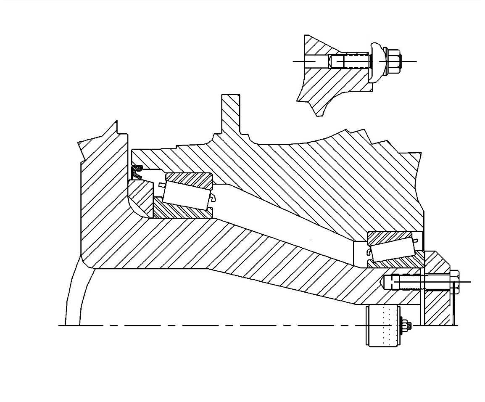
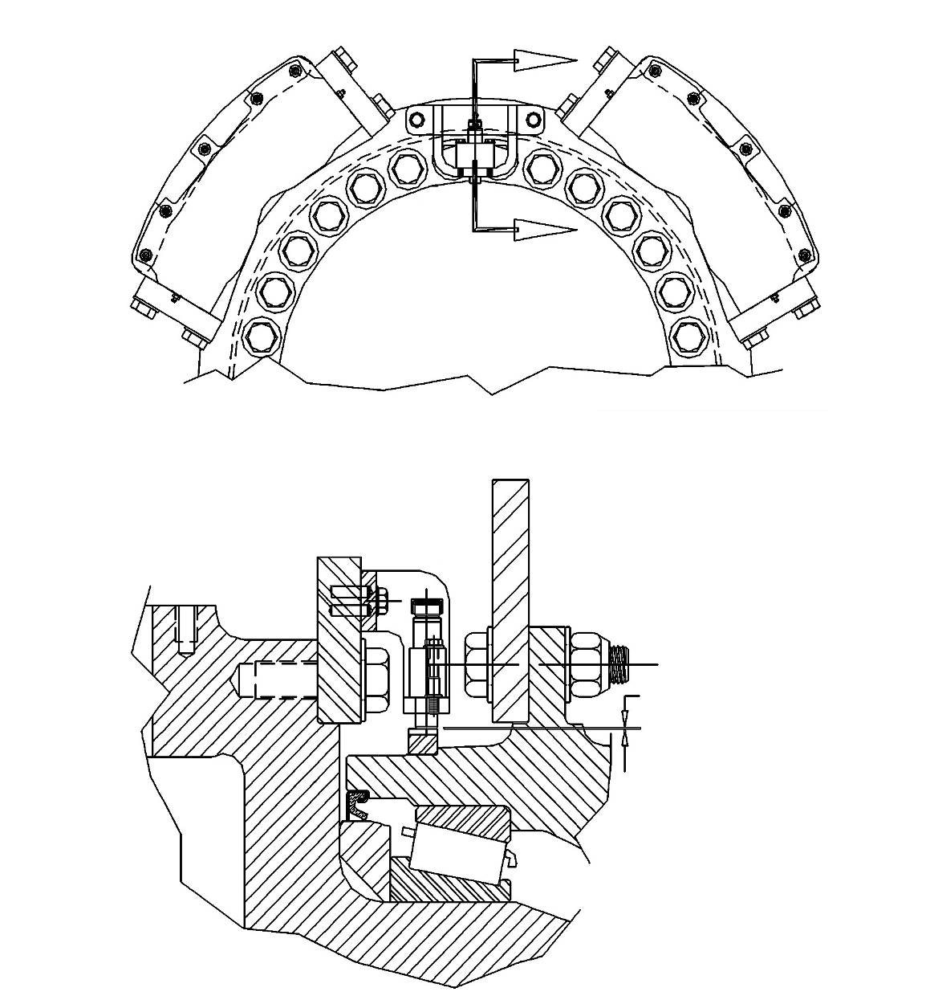
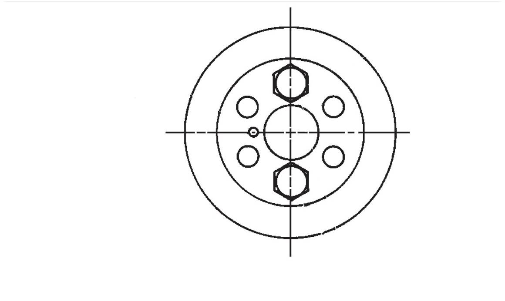
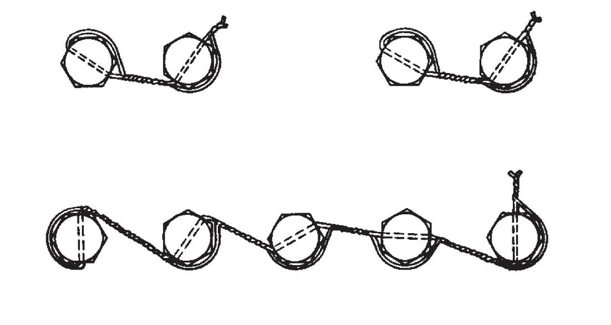
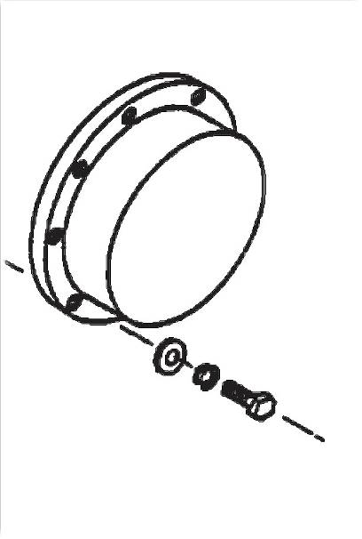

前轮总成. · FRONT WHEEL ASSY
Переднее колесо в сборе
Описание и расположение (см. рис. 1)
Переднее колесо в сборе включает в себя переднее колесо, обод в сборе, крепежные элементы подшипника и обода.
Управление
Переднее колесо в сборе устанавливается между передним мостом и шиной с ободом в сборе, играет роль «соединительного звена». Колесо вращается на коническом роликоподшипнике вокруг жесткой передней оси. Шина с ободом в сборе крепится к колесу рядом прижимов снаружи колеса.
Информация о «фактической» скорости карьерного самосвал с системы датчиков скорости в систему привода AC, чтобы управлять продвижением и динамическим замедлением карьерного самосвала.
ПРИМЕЧАНИЕ: Более подробную информацию об управлении и тестировании системы см. в инструкции по техническому обслуживанию системы привода Siemens.
Ремонт и регулировка
Периодическое техническое обслуживание включает в себя следующие виды работ:
1. Проверить колесо на наличие износа. Отремонтировать и заменить по мере необходимости.
ПРИМЕЧАНИЕ:
(1) Состав шпильки:
a. Буртик резьбовой части может обеспечить правильную глубину установки.
b. Благодаря шестигранной форме свободного конца можно снять и установить шпильку с помощью подходящего инструмента.
(2) В других случаях рекомендуется нанести Loctite242 (жидкий), Loctite248 (твердый) или их эквиваленты на резьбовую часть, чтобы зафиксировать ее должным образом.
2. Контрольный осмотр через 500 часов работы:
a. Проверьте, затянут ли зажим обода до достижения момента 525-550 фунт-футов (710-745 Н.м).
b. Проверьте работу датчика скорости при обычном тестировании и техническом обслуживании системы привода в соответствии с порядком, указанным в инструкции по ремонту Siemens. Очистите, отрегулируйте, отремонтируйте или замените по мере надобности.
3. Проверьте, нормально ли смазан подшипник переднего колеса и приложен ли преднатяг (см. последовательность выполнения разных процедур).
Регулировка подшипника переднего колеса (см. рис. 1-5)
При снятии или замене переднего моста, колеса или подшипника установите преднатяг подшипника в соответствии с нижеследующим порядком.
ПРИМЕЧАНИЕ: Эта процедура может быть использована при монтаже или демонтаже шины с ободом в сборе. Более подробную информацию о демонтаже шины см. в разд. 0010 главы 150 «Шина с ободом».
1. Измерьте толщину прижимной пластины (6) подшипника микрометром 1-2 дюйма (25-50 мм). Отметьте этот размер на прижимной пластине для дальнейшего использования (см. рис. 1).
2. Проверить зону вокруг колеса с внутренней стороны и ступицу колеса на наличие повреждений и примесей. Данная зона должна быть чистой без любых обломков и примесей.
3. Если существует необходимость замены подшипника в сборе, то нужно установить распорное кольцо подшипника, установите распорное кольцо на выступ поворотного кулака.
ПРИМЕЧАНИЕ:
a. Проверьте щупом 0,002 дюйма (0,5 мм), полностью ли прилагает распорное кольцо подшипника к выступу поворотного кулака. Вставьте калиберный щуп между краем распорного кольца и выступом, проводите измерения не менее чем в трех точках. Если можно вставить щуп, продолжайте подвигать распорное кольцо к выступу до тех пор, пока зазор полностью не исчезнет.
b. Используйте подходящий инструмент и будьте особенно осторожны, избегайте разрушения и загрязнения подшипника, уплотнительного элемента и других элементов в процессе выполнения операции.
Диагностика неисправностейНеисправностьВозможная причинаМетод устраненияОслабление колесаНенадлежащая регулировка подшипника - избыточное количество прокладокПроверить подшипник, повторно установить прокладки в соответствии с порядком, указанным в разделе «Ремонт и регулировка».Заклинивание или невозможность свободного вращения колесаНеполное выключение тормозаУбедиться в надлежащем выключении тормоза. Если тормоз не растормаживается- то обратиться к части 080 - «Тормозная система».Образования шероховатости или повреждение подшипникаПроверить подшипник, повторно установить прокладки в соответствии с порядком, указанным в разделе «Ремонт и регулировка».Установка избыточного количество прокладок подшипника - блокировка колесаНенормальное качение шиныИскривление ободаПроверить шину с ободом в сборе, заменить в соответствии с установленными требованиями.Ненадлежащая установка обода на колесоПроверить расположение обода на колесе, отрегулировать в соответствии с установленными требованиями.Повреждение колесаПроверить колесо на наличие повреждений, заменить его по мере необходимости.Короткий срок службы подшипникаНенадлежащее смазываниеСмазать согласно рекомендованному методу смазывания.Ненадлежащая установка прокладок подшипникаУстановить прокладки подшипника в соответствии с порядком, указанным в разделе «Ремонт и регулировка».Перегрузка или повреждение подшипника при использованииПроверить рабочее состояние и нагрузку, устранить проблемы в соответствии с установленными требованиями.
4. Если диск датчика скорости (2) был снят, то можно повторно установить его на колесо в следующем порядке (описание шага 4 показано на рис. 2):
a. Проверить внутренний диаметр диска датчика (2) и наличие/отсутствие грязи, масляных пятен или других примесей и повреждений и очевидных недостатков на посадочной поверхности колеса карьерного самосвала.
b. Равномерно нагревать диск датчика (2) до 300°F (148°C) .
c. Установить диск датчика (2) на монтажную поверхность колеса карьерного самосвала. Убедиться в равномерной установке и надлежащей посадке.
5. Установите расширительную пробку (20) (если она была снята). Убедитесь в наличии определенного зазора между торцом поворотного кулака и торцом болта (см. рис. 1).
6. Установите уплотнительное кольцо (3), заполните внутреннюю полость между уплотнительным кольцом и распорным кольцом подшипника смазкой.
ПРИМЕЧАНИЕ: Уплотнительная губка должна направляться к колесу в сборе.
7. Равномерно нанесите смазку на внутренний подшипник (4), нанесите большое количество смазки на ролики, убедитесь в том, что пространство между роликами заполнено смазкой.
ПРИМЕЧАНИЕ: В этот момент не требуется смазывание внешнего кольца подшипника, чтобы обеспечить надлежащий преднатяг подшипника.
8. Установить внутренний подшипник (4) на поворотный кулак, оно должно плотно прилегать к проставочному кольцу подшипника колеса (2).
9. Заполните пространство между обратной стороной внутреннего подшипник (4) и распорным кольцом подшипника (2), также полость между внешним подшипником и внутренним подшипником смазкой.
10. Разместить колесо на переднем мосту с помощью вилочного погрузчика, грузоподъемного крана или другими возможными методами.
11. Установите внешний подшипник (5) на поворотный кулак.
12. Смажьте болты (12) смазкой для подшипников.
13. Установите прижимную пластину (6) с помощью болтов (12) (регулировочная прокладка не установлена).
14. Попеременно затяните болты (12) прижимной пластины до достижения момента 250 фунт-футов (340 Н.м) с приращением 50 фунт-футов (70 Н.м).
ПРИМЕЧАНИЕ: Поворачивать колесо до момента плотного прилегания к роликам подшипника.
15. Ослабьте четыре из болтов (12), чтобы сбросить преднатяг подшипника.
16. Снимите болты, как показано на рис. 3.
17. Попеременно затяните болты до достижения момента 110 фунт-футов (150 Н.м) с приращением 20 фунт-футов (25 Н.м).
ПРИМЕЧАНИЕ: Поворачивать колесо до момента плотного прилегания к роликам подшипника.
18. Измерьте микрометрическим глубиномером расстояние между торцом переднего моста и наружной поверхностью прижимной пластины подшипника.
19. Вычтите значение (измеряемой) толщины прижимной пластины (6) подшипника из измеренного значения, определите количество потребляемых регулировочных прокладок.
20. Подготовить ряд регулировочных прокладок толщиной, которая должна быть совмещена с значением, полученным в шаге 19. Следует очистить все регулировочные прокладки и отдельно из измерить.
21. Снимите прижимную пластину (6) подшипника и внешний подшипник (5).
22. Нанесите смазку на внешний подшипник (5) и полость (как указано выше), установите регулировочные прокладки (7, 8, 9, 10 и 11), внешний подшипник (5) и прижимную пластину (6) подшипника.
23. Попеременно затяните болты с отверстием (12) до достижения момента 560 фунт-футов (760 Н.м) с приращением 100 фунт-футов (135 Н.м).
ПРИМЕЧАНИЕ: Поворачивать колесо (1) до момента плотного прилегания к роликам подшипника.
24. Зафиксируйте болт прижимной пластины стальной проволокой (13).
25. Установить колесный колпак и законтрить его болтами.
ПРИМЕЧАНИЕ: Сначала следует убедиться в надлежащей гладкости и чистоте всех посадочных поверхностей, затем нанести тонкий слой герметика RTV, затем нанести тонкий слой герметика между колесным колпаком и колесом с целью обеспечения отличной герметичности.
26. Установка и регулировка датчика скорости в сборе (см. рис. 2) производятся в следующем порядке:
a. Установить фиксирующий штифт (6) в кронштейн крепления тормозного суппорта.
b. Установить датчик скорости (1) на кронштейн (3).
c. Установите кронштейн/датчик в сборе на цилиндрический штифт с помощью болта (4), пружинной шайбы (5) и закаленной плоской шайбы (7), как показано на рисунке.
ПРИМЕЧАНИЕ: В этот момент не требуется затягивание установочных элементов.
d. Вставьте щуп 0,035 дюймов (0,88 мм) между передним концом датчика и диском датчика, отрегулируйте положение кронштейна, чтобы получить этот зазор.
e. Поверните колеса в сборе, убедитесь в том, чтобы зазор 0,035 дюймов (0,88 мм) является минимальным в любой точке.
f. Затянуть болт (4), зафиксировать кронштейн в сборе надлежащим образом.
ПРИМЕЧАНИЕ: Обратить особое внимание на защиту от случайного перемещения кронштейна. После фиксации кронштейна следует проверить зазор.
g. Повторять шаг е после затягивания элементов, убедиться в том, что минимальный зазор составляет 0,035 дюйма (0,88 мм). Перерегулировать и перепроверить по мере необходимости.
27. Если шина с ободом в сборе была снята, монтируйте в соответствии с порядком, указанным в главе 150 «Шина с ободом».
Демонтаж (см. рис. 1)
Демонтаж переднего колеса с карьерного самосвала производится в следующем порядке:
1. Припаркуйте ТС в безопасном месте.
2. Полностью сбросить давление в системе рулевого управления и тормозной системе в соответствии с порядком, указанным в части 050 - «Гидравлическая система».
ПРЕДУПРЕЖДЕНИЕ
Гидравлическая тормозная система представляет собой систему высокого давления, перед отсоединением любых трубопроводов следует полностью сбросить давление.3. Поднимите карьерный самосвал до тех пор, пока шины не оторвутся от земли, затем зафиксируйте ТС в этом положении с помощью подставок и т.д.
4. Демонтируйте шину с ободом в сборе в соответствии с порядком, указанным в главе 150 «Шина с ободом».
5. Отсоедините тормозной гидротрубопровод от суппорта в сборе. Установите чистую пробку на соединение гидротрубопровода, установите чистую трубную заглушку на каждый суппорт.
6. Снять датчик скорости из кронштейна тормоза в сборе, чтобы защитить его от повреждения.
7. Снять гидравлический трубопровод между суппортами. Установить чистые пробки на все открытые отверстия.
8. Снять суппорт в соответствии с порядком, указанным в части 080 - «Тормозная система».
ПРИМЕЧАНИЕ: Хранить снятые регулировочные прокладки отдельно и отметить их расположение. При повторной установки регулировочной прокладки и суппорта в сборе следует совместить суппорт с центром тормозного диска. При установке новые прокладок, тормозного диска или подшипника требуется повторная регулировка суппорта в сборе.
9. Снять колесный колпак, как показано на рис. 5.
10. Удерживайте колесо в неподвижном состоянии, снимите болты (12), прижимную пластину (6), регулировочные прокладки (7, 8, 9, 10 и 11) и внешний подшипник (5).
11. Демонтируйте колеса с поворотного кулака, тщательно защитите внутренний подшипник (4), уплотнительное кольцо (3) и распорное кольцо (2).
12. Снимите уплотнительное кольцо (3) и внутренний подшипник (4) с колеса.
13. Снять болты крепления тормозного диска к колесу по мере необходимости, затем снять тормозной диск.
Осмотр и ремонт
Ремонт снятого колеса производится в следующем порядке:
1. Тщательно очистить поворотный кулак, подшипник и ступицу колеса чистым растворителем. Высушить их чистым, сухим, сжатым воздухом.
2. Проверьте уплотнительное кольцо на наличие чрезмерного износа. Отремонтируйте или замените по мере надобности.
3. Проверьте сухарь подшипника колеса или уплотнительное распорное кольцо (2) на наличие признаков износа. Отремонтируйте или замените по мере надобности.
4. Проверить внутреннее и внешнее кольца подшипника с беговой дорожкой на наличие износа, трещин или раковин. В случае обнаружения дефектов, следует заменить целиком.
5. Вставьте щуп 0,001 дюйм (0,03 мм) между внешней стороной беговой дорожки подшипника и выступом колеса, проверьте, должным образом ли установлена беговая дорожка подшипника. Снова определите расположение по мере надобности.
6. Проверьте наличие/отсутствие признаков повреждений или разрушения на внутренней и внешней сторонах фланца, используемого для установки тормозного диска на переднее колесо магнитопорошковым методом контроля, методом цветной дефектоскопии или другими допустимыми методами. В случае обнаружения дефектов, замените в соответствии с требованиями. Для получения более подробной информации обратитесь в нашу компанию.
7. Проверить правильность установки колесных шпилек и наличие/отсутствие следов износа. В случае обнаружения ослабления или повреждений, заменить их по мере необходимости в следующем порядке:
a. Снять старые шпильки с помощью инструмента.
ПРИМЕЧАНИЕ: Если невозможно выполнение работы с помощью ручного инструмента, проводите частичный подогрев шпильки или зажима обода до 485°F (250°C), выполните демонтаж в горячем состоянии.
b. Очистите и проверьте резьбу зажима обода. Отремонтируйте по мере надобности.
c. Установите крепежный элемент после очистки резьбы зажима обода подходящим чистящим средством.
ПРИМЕЧАНИЕ: На резьбе не должно быть грязи, масляных пятен, воска, краски, антикоррозионного средства или остатков после антикоррозионной обработки. Очистите растворителем, но не оставляйте загрязнений и слоев пленки.
d. Нанесите несколько капель герметика Loctite242 (жидкого) или Loctite248 (твердого) или его эквивалента на резьбу шпильки и внутреннюю резьбу зажима обода.
ПРИМЕЧАНИЕ: Более подробную информацию о правильном использовании Loctite и его эквивалента см. в главе 070 «Ходовая система».
e. Установка шпильки:
(1) Вставить резьбовой конец шпильки в резьбовое отверстие, затягивать его до момента соприкосновения буртика с колесом в сборе. Затянуть ее до достижения момента 15-20 фут-фунтов (20-27 Н.м).
f. Пусть вяжущее средство затвердевает в соответствии с установленными требованиями.
ПРИМЕЧАНИЕ: Для достижения максимального значения прочности потребуется 24 часа. В ходе некоторого процесса установки можно использовать специальный катализатор для ускорения процесса отверждения, но это может негативно повлиять на общую прочность. Следует проводить осмотр перед вводом в эксплуатацию.
8. Проверьте датчик скорости вращения колеса, монтажный кронштейн и диск датчика на наличие загрязнений и повреждений. Очистите, отремонтируйте или замените по мере надобности.
Монтаж (см. рис. 1 и 2)
Монтаж колеса производится в следующем порядке:
1. Заполнить полость ступицы колеса смазкой на 1/2-3/4 объема полости.
2. Равномерно нанести смазку на внутренний подшипник.
ПРИМЕЧАНИЕ: В этот момент не допускается смазывание внешнего кольца подшипника, чтобы обеспечить правильный преднатяг подшипника.
3. Заменить тормозной диск (если он был снят) и установить штуцер. Затянуть болты в соответствии с порядком, указанным в части 080 - «Тормозная система».
4. Монтировать колесо в сборе (включая датчик скорости в сборе) и отрегулировать зазор в соответствии с порядком, указанным в разделе «Ремонт и регулировка».
5. После монтажа колеса снова установите и отпустите тормозной суппорт в сборе в соответствии с порядком, указанным в главе 080 «Тормозная система».
6. Монтируйте шину с ободом в сборе в соответствии с порядком, указанным в главе 150 «Шина с ободом в сборе».
5
Ходовая система – переднее колесо в сборе (с самосмазывающимся подшипником)
070-0010
10
Ходовая система – переднее колесо в сборе (с самосмазывающимся подшипником)
070-0010
4
Ходовая система – переднее колесо в сборе (с самосмазывающимся подшипником)
070-0010
Ходовая система – переднее колесо в сборе (с самосмазывающимся подшипником)
070-0010
Ходовая система – переднее колесо в сборе (с самосмазывающимся подшипником)
070-0010
Ходовая система – переднее колесо в сборе (с самосмазывающимся подшипником)
070-0010
8
9
Дополнения - Масса компонентов
200-0090
Спецификация1Переднее колесо8Регулировочная прокладка15Шпилька2Проставочное кольцо подшипника9Регулировочная прокладка16Гайка3Уплотнительное кольцо10Регулировочная прокладка17не используется4Внутренний подшипник11Регулировочная прокладка18не используется5Внешний подшипник12Болт19не используется6Прижимная пластина13Проволока20Расширительная пробка7Регулировочная прокладка14Зажим для обода
Рис. 1. Переднее колесо в сборе
3 2
1
4
5
20
7，8，9，10，11
13
6 12
14 16
15
Спецификация1Датчик скорости4Болт7Закаленная плоская шайба2Диск датчика скорости5Пружинная шайба83Кронштейн датчика скорости6Цилиндрический штифт9Рис. 2. Установка датчика скорости
4，5，7
3
6 3 1
2
0.035 INCH
(0.88 mm)
Зазор
Рис. 3. Упорная планка подшипника переднего колеса
Измерительное отверстие диаметром 3/8 дюйма (9,5 мм)
Измерение не должно производиться начиная с центрального отверстия диаметром 2-3/4 дюйма (70 мм)
Щит Пластина
Болт щита
Рис. 4. Установка проволоки
Способ попарной контровки проволокой
Способ последовательной контровки проволокой
Спецификация1Колпак переднего колеса3Болт3Контрящая шайба4Плоская шайбаРис. 5. Стандартный колесный колпак в сборе
1
2
4 3
Иллюстрации




